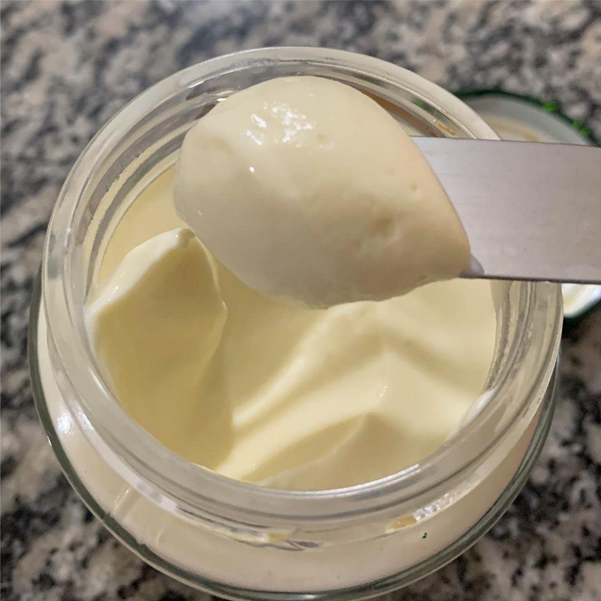

Creamy Delight Cream Cheese

Picture by Google
Ingredients
- 1 liter of milk 3,2% (or higher)
- 4 tablespoons of alcohol vinegar
- 2 heaping tablespoons of butter
- 1/2 cup of water
- 250 ml additional milk
- salt to taste
Directions
- Boil the milk until it rises.
- After boiling, turn off the heat and add 4 tablespoons of vinegar.
- Stir until all the milk curdles.
- Strain the mixture retaining the ricotta.
- Place the ricotta in a blender along with the butter and milk and blend well.
- Put in the fridge for a few hours
- Take a picture and tag me on instagram @plvalim 😎
- Eat without moderation